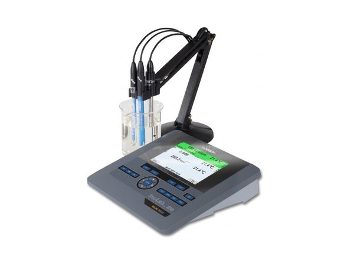

pH · µS/cm · mg/L O₂ · NTU
Water quality meters
- Portable, benchtop and online meters
- pH, conductivity, TDS, salinity, DO, ORP, turbidity
- Complete BOD and COD systems, spectrophotometers
WTW · a Xylem brand